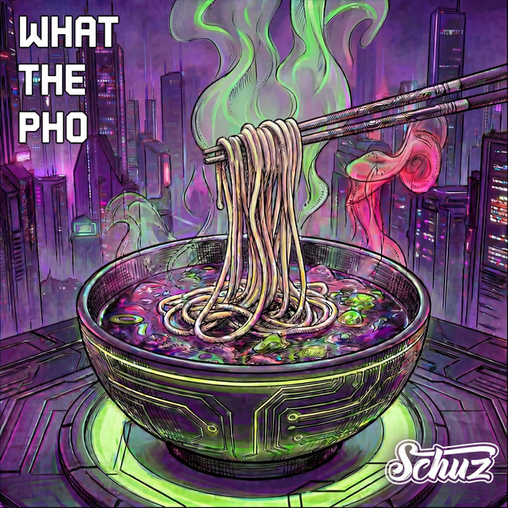
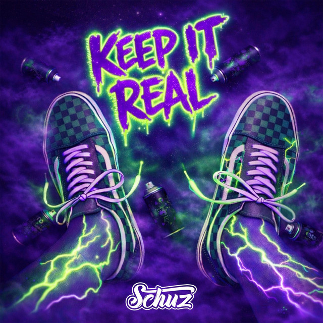

Electronic Press Kit
Schuz
Producer · DJ · Songwriter — Bass / Trap / Dance
- Pronounced
- “Shoes”
- Scene
- Pacific Northwest
- Producing since
- May 2016
- Training
- Point Blank · Producer Dojo · The Approach
- Latest release
- Get That
- Interviews
- Available on request

Schuz’ journey as a producer started in May of 2016 with his first music production class. Raised learning to play the piano, Schuz always had music around him. He fell out of music through middle and high school to focus on academics and sports, but after college, he leaned back into the industry since his roommate at the time was an artist manager, and began performing as a DJ around Seattle. The experience inspired him to own his destiny and treat this as a long-term strategy.
He has kept investing in his craft: production training at Point Blank Music School, Producer Dojo’s Class of 808 program, and Seth Drake’s mixing and mastering course, The Approach.
Since then, the artist has released a series of singles that all bring a fresh approach and showcase different sides to his style as a producer, DJ, and songwriter.
“Fire In the Hole” ft. Rico Act was released as his debut, and many soon followed. As you follow along his string of singles, you can hear his evolution as a producer along the way.
“As any producer, the more you grow into your abilities your sound can change. I'm an avid believer in continuous training and finding new sounds that spark interest. You don't have to be in the box and only use X plugin from Y vendor. Get creative and field record sounds around you and use those to make more cohesive songs with texture. I do think that my sound has been found though, which can take people awhile to do,” says Schuz.
His latest release, “Get That,” is available for streaming and download on most major outlets, and Schuz is always working on new material for upcoming releases.
The artist is available for interviews upon request.
Training
Education
Music production
Point Blank Music School
Music production training at one of the best-known electronic music schools.
Class of 808 program
Producer Dojo
Mentorship and production program from ill.Gates’ Producer Dojo.
The Approach
Seth Drake
Seth Drake’s mixing and mastering course.
Featured track · Latest release
Get That
“Get That” is a warehouse-ready banger that fuses wobbly bass, trap rhythms and dubstep drops into pure dance energy. Built for rave floors and peak-time moments, its glitchy, bass-forward production walks the line of controlled chaos—hypnotic enough to lock a crowd in, hard-hitting enough to make the whole room move.
It's the track you reach for when the night needs a jolt: tension that keeps winding up, drops that land heavy, and a groove that never lets go. The official video matches the energy with a motion-graphic journey through neon and movement, set in the same green-and-purple world that runs through the Schuz catalog.
Out now on Spotify and all major streaming and download platforms.

Previous single
Reminisce (Remember Me)
“Reminisce (Remember Me)” balances two worlds—delicate introspection and bold bass presence. The intro floats: ethereal flute melodies weaving through psychedelic purples and glowing greens, cherry blossom petals drifting through haze. Then the drop hits. Deep, grounding bass and percussion anchor the ethereal atmosphere, transforming nostalgia into momentum.
The breakdowns pull back to contemplation, the drops push forward into presence. It's a track about holding onto memory while refusing to live there, perfect for late-night drives, deep listening sessions, or anywhere you need both beauty and bass.
Stream ReminisceWatch
Videos & live sets
Music videos
Live
Discography
Releases





- Get ThatSingle · Latest
- Reminisce (Remember Me)Single
- What The PhoSingle
- Tunnel Visionw/ Satoru
- Keep It RealSingle
- SynergyEP
- What We DoSingle
- ChirpSingle
- HeatedSingle
- Otter Popft. Luke Rain
- ResurgenceSingle
- JealousSingle
- Stand BySingle
- Ready or NotSingle
- Let it GoSingle
- Fire in the Hole ft. Rico ActDebut single
Press
Features & interviews
Schuz is available for interviews on request.
Press photos
Photos & logos
Click any image for the full-size file, free to use for press and promotion.


Live photos by Focked Media. Please credit when publishing.